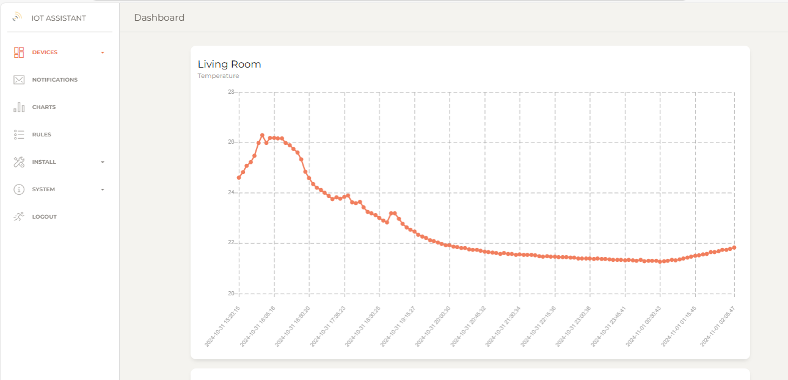
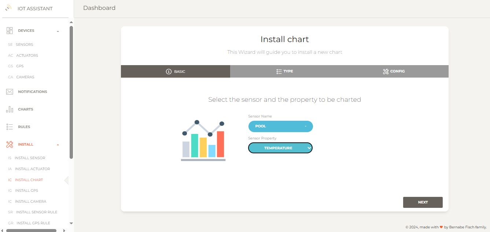
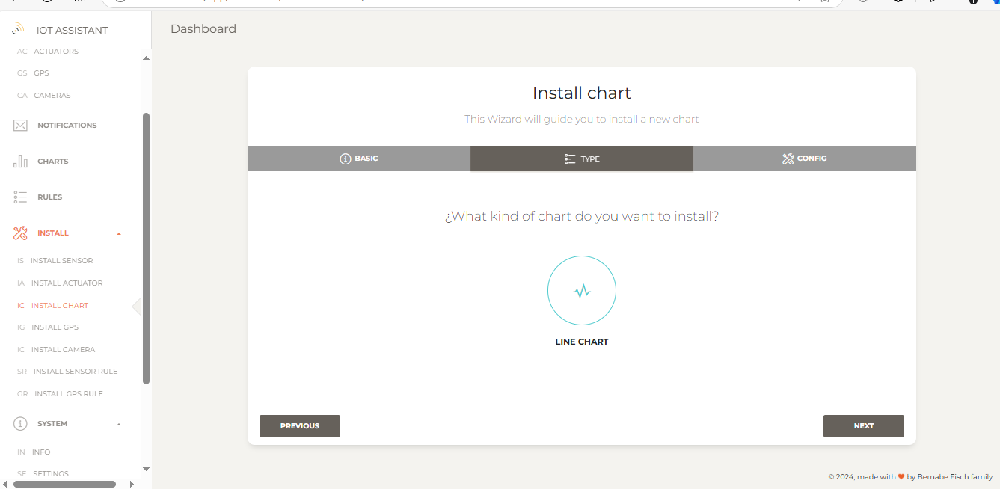
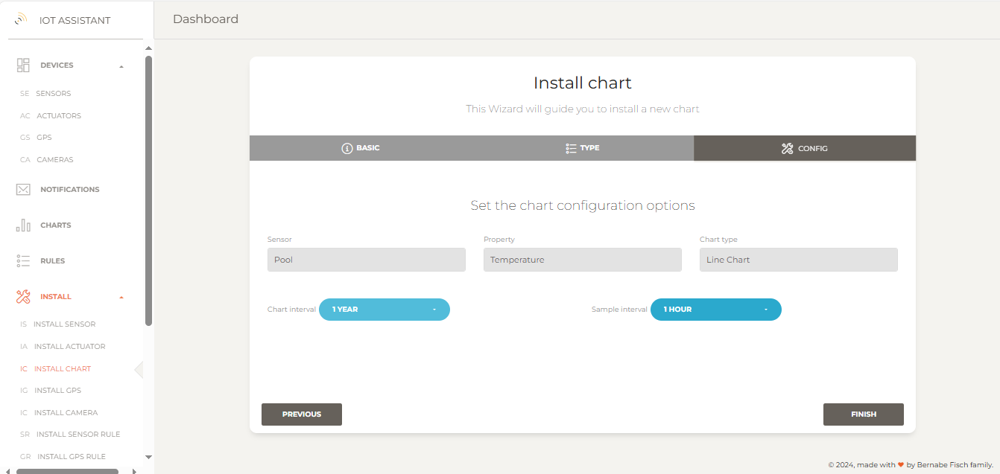
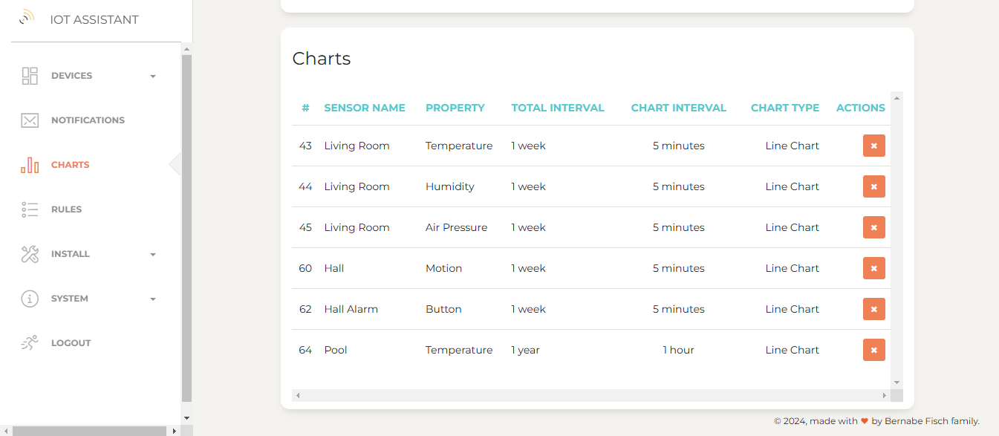

Managing charts
For any installed sensor, click Charts in the left navigation bar to view a chart for each property, showing value changes over time.
By default, charts display data just for last week with a 5-minute sample interval.
You can create custom charts with adjustable timeframes and sample intervals (e.g. daily values over a year).
{kind=link}
Installing a custom chart
To install a new chart, go to Install > Install chart in the left navigation bar to open the setup wizard.
1 - Select the sensor and the property you want to chart and click Next.
{kind=link}
2 - Select the chart type. For Line Chart, select Line Chart and click Next
 3 - Enter interval information.{kind=link}
The Chart interval defines how long values will be displayed (e.g., 1 month shows data from the last month).
The Sample interval sets the minimum time between samples, regardless of new values published by the sensor in the meantime. Select No interval for all values to be charted.
{kind=link}
4 - Finally, click on Finish to proceed. . If everything is set up correctly, you'll be redirected to the Charts page where all charts are displayed. On this page its also possible to delete any chart.
{kind=link}